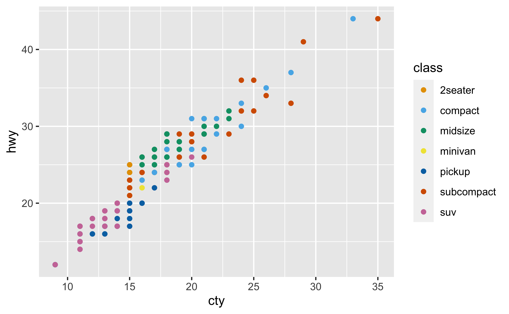
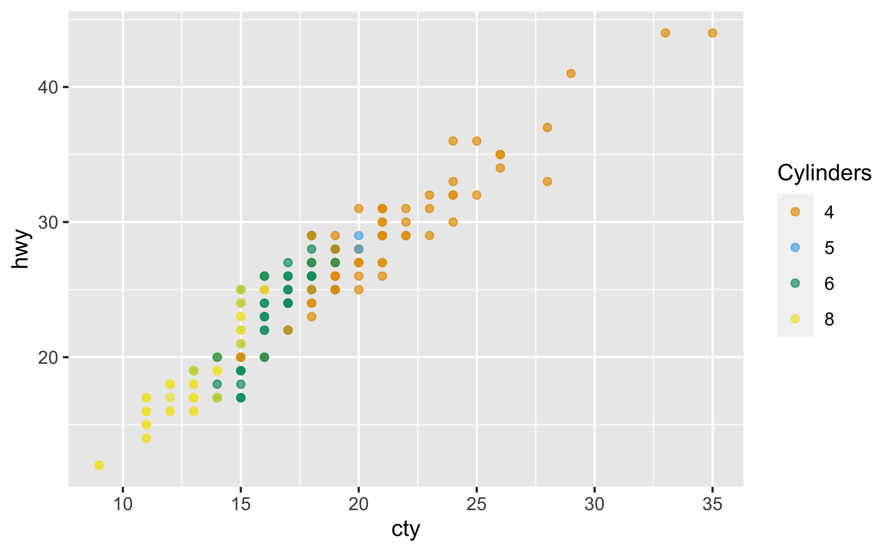
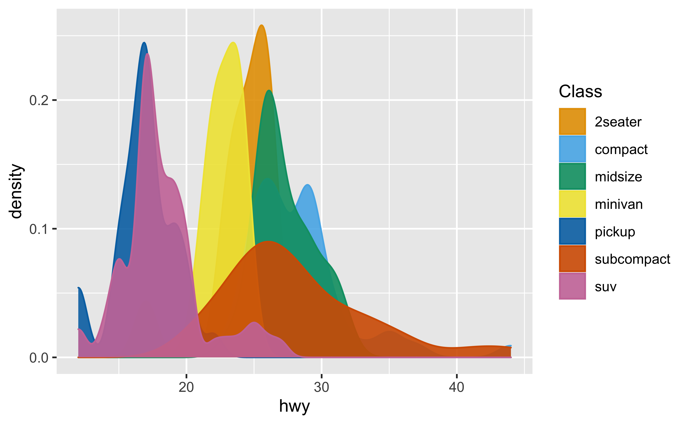
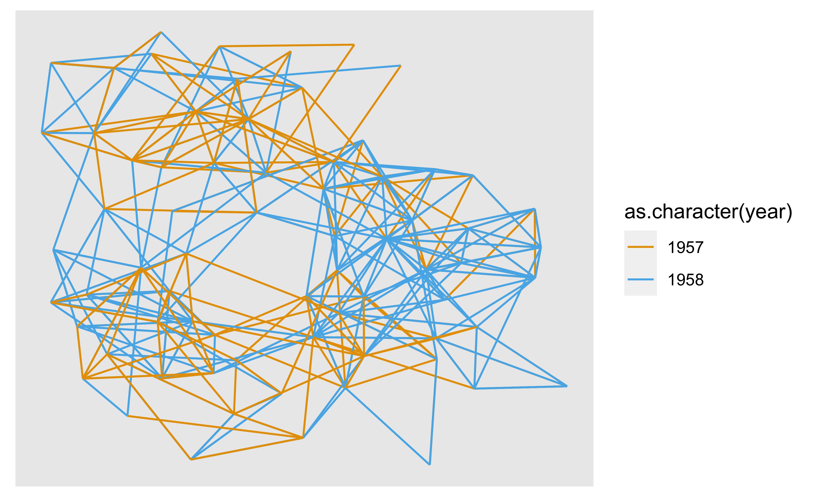

ggokabeito provides ggplot2 and ggraph scales to easily use the discrete, colorblind-friendly ‘Okabe-Ito’ palette in your data visualizations. Currently, ggokabeito provides the following scales:
-
scale_color_okabe_ito()/scale_colour_okabe_ito() scale_fill_okabe_ito()-
scale_edge_color_okabe_ito()/scale_edge_colour_okabe_ito()
Installation
You can install the development version of ggokabeito from GitHub with:
# install.packages("devtools")
devtools::install_github("malcolmbarrett/ggokabeito")Examples
library(ggokabeito)
library(ggplot2)
ggplot(mpg, aes(cty, hwy, color = class)) +
geom_point() +
scale_color_okabe_ito()
ggplot(mpg, aes(cty, hwy, color = factor(cyl))) +
geom_point(alpha = 0.7) +
scale_color_okabe_ito(name = "Cylinders", alpha = .9)
ggplot(mpg, aes(hwy, color = class, fill = class)) +
geom_density() +
scale_fill_okabe_ito(name = "Class", alpha = .9) +
scale_color_okabe_ito(name = "Class")
ggokabeito also works with ggraph
# example from https://www.data-imaginist.com/2017/ggraph-introduction-edges/
library(ggraph, warn.conflicts = FALSE)
library(igraph, warn.conflicts = FALSE)
graph <- graph_from_data_frame(highschool)
pop1957 <- degree(
delete_edges(graph, which(E(graph)$year == 1957)),
mode = "in"
)
pop1958 <- degree(
delete_edges(graph, which(E(graph)$year == 1958)),
mode = "in"
)
V(graph)$pop_devel <- ifelse(
pop1957 < pop1958,
"increased",
ifelse(pop1957 > pop1958, "decreased",
"unchanged"
)
)
V(graph)$popularity <- pmax(pop1957, pop1958)
E(graph)$year <- as.character(E(graph)$year)
ggraph(graph, layout = "kk") +
geom_edge_link(aes(colour = as.character(year))) +
scale_edge_color_okabe_ito()
Similar work
ggokabeito is heavily inspired by the excellent colorblindr package. However, colorblindr is not currently on CRAN and includes some complex features for analyzing colorblind safeness that are not necessary for using the Okabe-Ito palette. Additionally, colorblindr was developed prior to R 4.0.0, which set Okabe-Ito as the default discrete color palette. ggokabeito thus has fewer overall dependencies but a strong one on R 4.0.0 or greater.
Code of Conduct
Please note that the ggokabeito project is released with a Contributor Code of Conduct. By contributing to this project, you agree to abide by its terms.